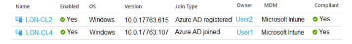

136-PONTO DE ACESSO
Você tem um locatário do Microsoft 365 que usa o Microsoft Intune para gerenciar dispositivos pessoais e corporativos.
O locatário contém dispositivos Windows 10, conforme mostrado na exposição a seguir.
